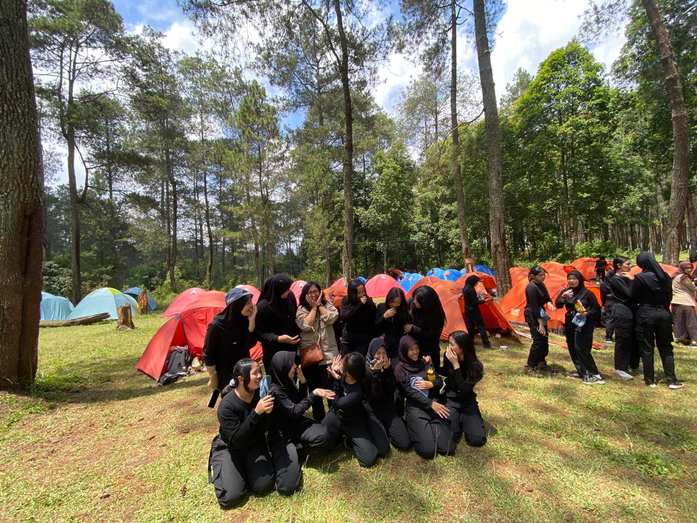
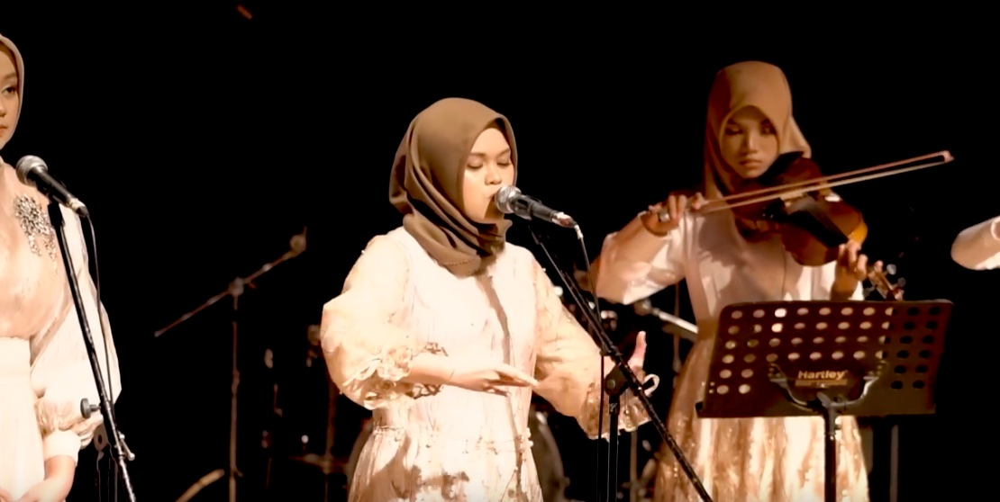
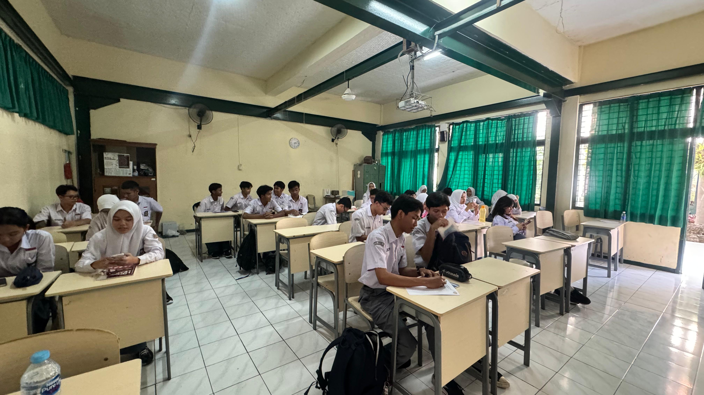

PORAK, atau Pekan Olahraga Antar Kelas, adalah salah satu ajang tahunan yang paling ditunggu oleh para siswa di SMA Negeri 3 Bandung. Acara ini merupakan kompetisi olahraga yang melibatkan seluruh kelas, dengan tujuan untuk mempererat hubungan antar siswa serta menumbuhkan semangat sportivitas dan kebersamaan. Kegiatan ini biasanya diadakan pada semester ganjil dan melibatkan berbagai cabang olahraga seperti futsal, basket, voli, dan bulu tangkis.
KAMPRT adalah acara camping tahunan yang diadakan oleh SMA Negeri 3 Bandung. Acara ini berlangsung selama dua hari satu malam dan dirancang untuk memberikan pengalaman berkemah yang menyenangkan sekaligus edukatif bagi para siswa. KAMPRT bertujuan untuk membekali siswa dengan berbagai keterampilan praktis yang berguna, terutama dalam situasi darurat di alam bebas. Selain itu, acara ini juga menjadi ajang untuk meningkatkan kebersamaan dan kerjasama antar siswa.
Tributes SMA Negeri 3 Bandung 2023 adalah acara musik klasik tahunan yang diselenggarakan oleh sekolah, menampilkan siswa-siswa berbakat dalam memainkan karya-karya musik klasik. Acara ini diadakan di Dago Tea House, salah satu tempat seni dan budaya yang ikonik di Bandung, yang menawarkan suasana yang sempurna untuk menikmati alunan musik klasik. Tributes menjadi momen istimewa bagi para pemain untuk menunjukkan kemampuan mereka dalam menampilkan karya-karya komposer besar dunia, sekaligus memperkenalkan musik klasik kepada generasi muda.
Pelatihan Olimpiade Sains Nasional (OSN) di SMA Negeri 3 Bandung merupakan program unggulan yang diadakan secara rutin untuk mempersiapkan siswa berprestasi menghadapi kompetisi sains tingkat nasional. Pelatihan ini bertujuan untuk mengembangkan potensi akademik siswa dalam bidang sains, seperti Matematika, Fisika, Kimia, Biologi, dan bidang lainnya. Program ini dirancang khusus untuk siswa yang memiliki minat dan bakat dalam ilmu pengetahuan, dengan harapan mereka dapat berprestasi di tingkat yang lebih tinggi.

Sekolah Menengah Atas Negeri 3 Bandung, yang sering dikenal sebagai SMAN 3 Bandung, adalah salah satu sekolah menengah atas yang terkemuka di Indonesia. Didirikan pada tahun 1955, sekolah ini awalnya berfungsi sebagai Sekolah Menengah Pertama dan kemudian berkembang menjadi Sekolah Menengah Atas. Sejak awal berdirinya, SMAN 3 Bandung telah berkomitmen untuk memberikan pendidikan berkualitas tinggi, dengan tujuan mencetak generasi muda yang berprestasi dan mampu bersaing di tingkat nasional maupun internasional.